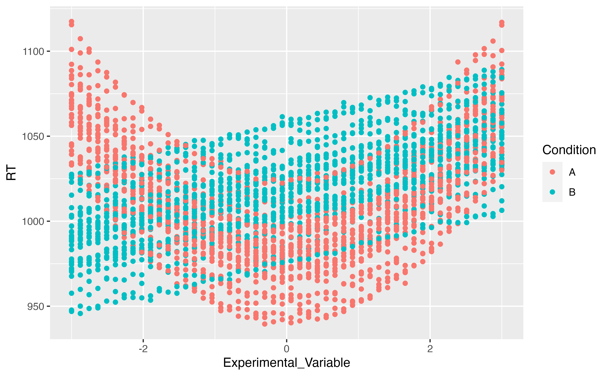

The Modelisation Approach to Statistics
Source:vignettes/modelisation_approach.Rmd
modelisation_approach.RmdFor a long time, applied statistics, especially in psychology, revolved around the idea of assessing differences between groups, using t-tests or ANOVAs, or by investigating the existence of a significant linear relationship between two continuous variables using correlations.
Every psychology student heard that “ANOVAs, t-tests and correlations are all linear models” (aka, linear regressions). And thus, one can only wonder why these different tests have not been yet replaced by a unified model?

The tests mentioned above have major perks. For instance, they are very easy to compute (one can even figure them out by hand). This partially explains their historical popularity, as these tests became the norm at an age when computers and fancy programs weren’t available. Moreover, they are easy to visualize (or so it is believed, as it’s not always true - but we’ll come to that later) and, most importantly, they have straightforward (or at least, conventionally accepted) interpretations. And, after all, statistics in many fields are used with the aim to draw some conclusions from the data.
But here are the problems:
- We don’t know whether the model lying underlying the test (the t-test, the ANOVAs or the correlation) is any good to “represent” the data, preventing in turn to adjust the confidence in the results.
- The visualisation are usually based on the data, rather than on the model (which is problematic in the case of complex models).
- New indices, such as group means, contrasts, etc., are also derived from the data, instead of using the model.
Thus, we will describe below another approach to statistics, centred around statistical modelisation.
The Traditional Way
Data Simulation
First we will run the function below to simulate some data. There’s no need to understand the hows and whys, as we will explain everything in due time.
Click here to see the code to generate the data.
generate_data <- function(effect=5, noise=0.5){
data <- data.frame()
n <- 100
for(i in 1:length(effect)){
participant <- data.frame(Experimental_Variable = c(seq(-3, 3, length=n / 2), seq(-3, 3, length=n / 2)))
participant$RT <- c(participant$Experimental_Variable[1:(n/2)]**2 - effect[i], (participant$Experimental_Variable[(n/2+1):n] + effect[i])) + rnorm(n, 0, abs(noise[i]))
participant$Condition <- rep(c("A", "B"), each=n/2)
participant$Participant <- paste0("S", i)
data <- rbind(data, participant)
}
data$RT <- (100 + data$RT) * 10
data
}
generate_data(effect=rnorm(30, 2, 2), noise=rnorm(30, 0, 0.4)) %>%
group_by(Participant, Condition) %>%
ggplot(aes(x=Experimental_Variable, y=RT, color=Condition)) +
geom_point()
ANOVAs
In ANOVAs, it’s all about groups. Even though people also add in continuous variables (creating these ANCOVAs, MANOVAs and other monstrosities), it’s not really “in their spirit”: ANOVAs were made to compare groups.
So we will take, for each participant, its 20…
TO DO: COMPLETE THIS VIGNETTE.